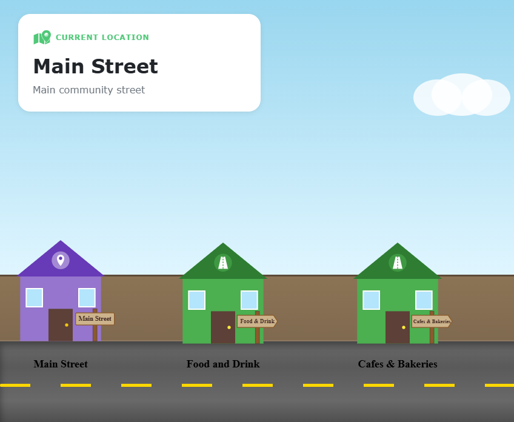

01 · Web Application
Community Communication System
A Java and Spring Boot web application designed for community communication with role-based user flows, database integration and responsive pages.
JavaSpring BootThymeleafMariaDBTesting